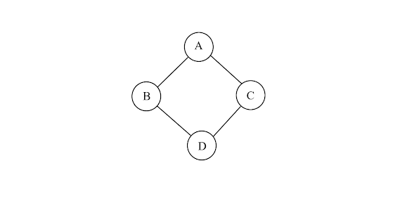

C11STAR

Ta sẽ duyệt mọi cặp C, D rồi đếm số cặp A, B thỏa mãn.
Thứ tự duyệt là tăng dần theo giá trị $(i + j)$ (để đảm bảo duyệt A, B trước C, D).
Gọi $f[k][i][j]$ là số cặp D, C thỏa mãn $i_D - j_D = k, i_C - i_D = j_C - j_D = i, a_{i_D j_D} = a_{i_C j_C} = j$. Khi đang xét 2 đỉnh D, C, nếu $a_{i_D j_D} \ne '.'$ và $a_{i_D j_D} = a_{i_C j_C}$ thì cộng $f[k][i][j]$ vào kết quả và tăng $f[k][i][j]$ lên 1.